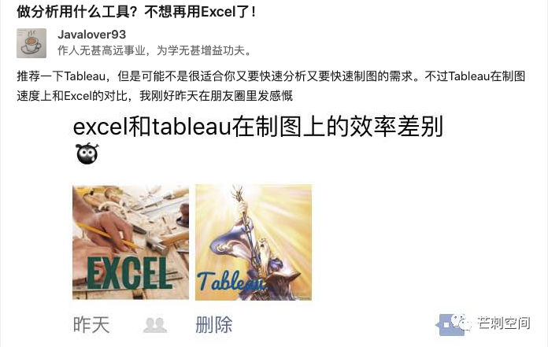

我在 2016 年下半年初次结识 Business Intelligence，当时只是在寻找进入数据分析的行业道路，没想到居然已经从业 4 年了。在此期间，对 BI 的认识和理解发生了多次变化，略有提升。
Phase 1：绝妙的绘图工具
初识 BI 的契机我已经忘记了，大概率是在搜集数据分析资料时，看到网友提到了 Tableau，在简单学习过官网视频后，就能马上开始绘图了。Tableau 制图的速度和效果给我带来的震撼，大概只能和第一次看到魔术时的震撼相比了。我还激动地在知乎上发了文字。感谢知乎为了记录了我初识 BI 的那一天：2016-08-07。

Phase 2：数据架构里的展示层
自学 Tableau 半年后，我入职国内大健康行业 Top1 的互联网公司，开始了数据分析师 BI 工程师的工作，某种意义上的职业生涯的起点。在这里必须实名感谢花厂，虽然我在职期间限于个人能力没能给花厂贡献足够的数据驱动力，但我却实打实地学到了不少东西。（这句话看似毫无逻辑，但实际充满感情。）
再半年，我开始在业余时间寻找别的 BI 工具，虽然彼时没有一款 BI 产品能动摇 Tableau 在我心中的地位，但 BI 的美妙光环已经开始褪散。因为我认识到：
（1）除去美好的交互带来的分析能力，让 Tableau 在诊断性分析上高别人一筹之外，大部分的 BI 软件在本质上还是一个描述性分析工具，大部分的 BI 用户也只能做到描述性分析。这意味着对于公司内的绝大多数人，Tableau 也好，开源报表也好，在使用效果上是没有区别的。我个人心心念念的各种美好小功能，对于用户而言是可有可无的 feature，对于数据开发团队而言只是产品选型上的 option。
（2）Tableau 的 VizQL 让它具备了与众不同的特点，但它本身不具备大数据处理能力，Tableau 不是数据分析的全部！进而我得出了这样的结论：BI 工具可能只是数据分析的最后一步，在数据分析全链路的视角上看，BI 不能很好地处理数据，能极好地呈现数据，这甚至比不过恶名昭著的一条龙 Excel。BI 通过数据接口，比如各种 SQL dialect，将性能压力转移给了底层的数据平台。
Phase 3：Data Portal / Digital Portal
但这个认识，很快就被新的认识替代了。作为毫无信息管理学科基础的人，我自己误到了一点：企业流程都可以数据化，所有的数据都可以上 BI，届时组织将是透明的！不考虑投入成本的情况下，人力资源、财务等职能部门可以数据化，更不用说销售、运营部门了。
我当时私下把数据比喻为血液，信息/数据在组织内应该具备畅行无阻的能力（此处暂不考虑部门数据共享、数据安全、数据权限等各类问题）。现在想应该比喻成神经系统。不过已经不重要了，因为在转眼的第二年底（2018年），数据中台的概念开始横扫数据领域，然后在 2019 年迅速地涨落。
话说回来，真正让我这个想法成型的是 2018 年上海的 Tableau 大会。此处又要感谢老东家为我们提供了这次学习机会。在会上，我最为重要的发现是 BI + AI 的应用，当场给我补上了数据分析和数据科学之间的应用「鸿沟」。请允许我说明一下，「AI + BI」是我目前东家的理念，我极为赞同，两个词的顺序不同，但本意完全一致。Tableau 当时给出的方案是插件式的，允许第三方开发数据分析应用，Tableau 通过接口来调用或者嵌入仪表板，最后实现了算法的平民化。有趣的是，在 2019 年的 Gartner 报告里，相似的概念“增强分析”也被抛出。在那一段时间里，我也注意不少 BI 产品在这方面的尝试。
于是，企业信息中心加上 AI 能力并入 BI，BI 软件显得一切皆可数据。后来我个人在脑子把这个想法叫做企业数据门户。
Phase 4：BI/DW 不可分家
要提两件我自己一度感到十分沮丧的事情。第一就是我发现我满心欢喜拥抱的其实是一个「古老」门类，BI 早已有之，其底层的 DW 更是早已有之。真可谓是太阳底下无新鲜事。第二就是加深了 Phase 2 的感受单纯：BI 就是那层皮，企业数据分析能力的筋骨是数据架构，是业务信息化。
单纯的 BI 项目的走不长远的。再小的项目也是最好一开始就按某种数据仓库的既定范式去做，才具备向企业内其他数据范围扩展的能力。
「BI 工程师」并不存在，这是数据仓库工程师或者业务分析师的重合工作范围。数据仓库作为数据治理的一部分，使得这门技术的应用色彩远大于研发色彩，more implementation than engineering。
结尾
感谢你能坚持看到这里。很遗憾这又是一片虎头蛇尾的文章，这不是 BI 的错，是我的力竭。4 年的时间我只能作出这样的小结，愧煞愧煞！
20210218 补：虽然大部分的 BI 产品目前并没有很好地做到增强分析，但至少希望厂家们继续往这个方向努力。否则 BI 永远无法进步了。